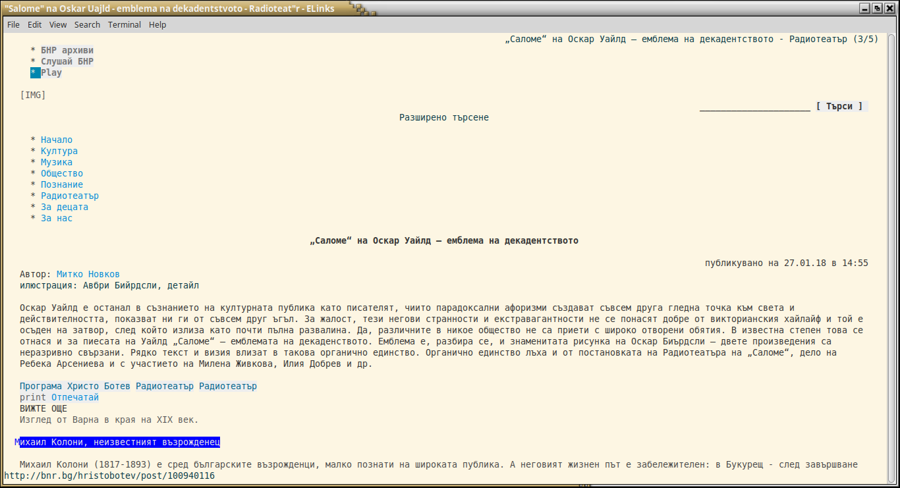
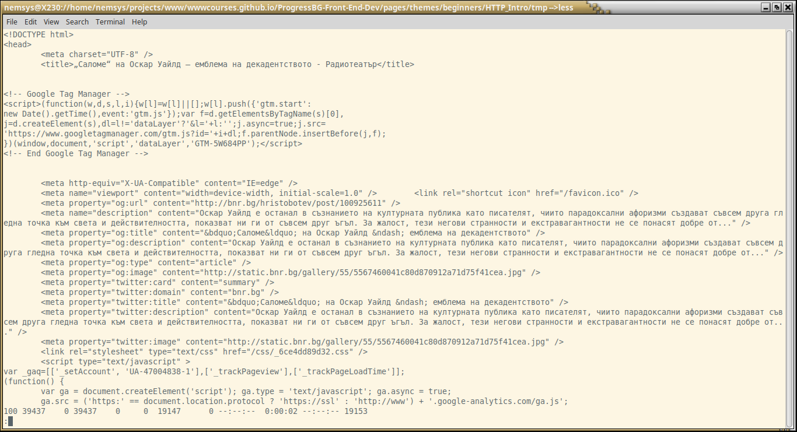
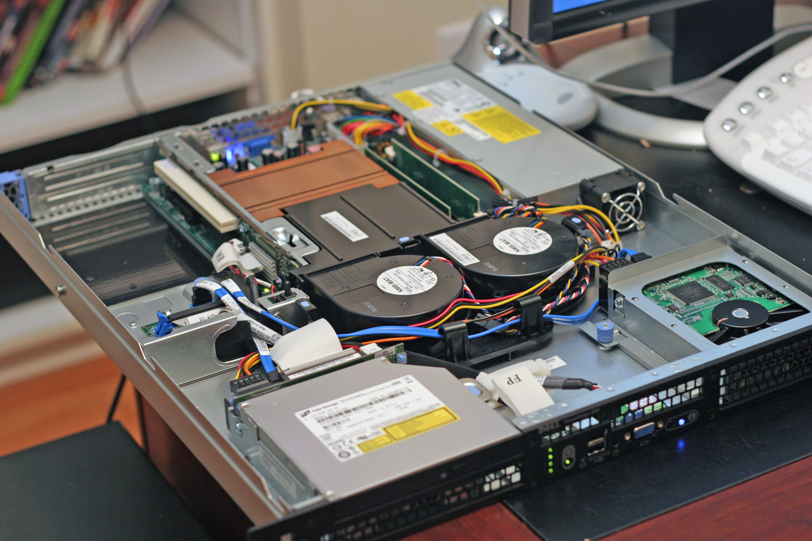

Keyboard shortcuts:
N/СпейсNext Slide
PPrevious Slide
OSlides Overview
ctrl+left clickZoom Element
If you want print version => add '
?print-pdf' at the end of slides URL (remove '#' fragment) and then print.
Like: https://wwwcourses.github.io/...CourseIntro.html?print-pdf
Created for

Iva E. Popova, 2021-2022,

What is Internet?
What is Internet?
A good explanation by the IT Crowd :)
- Jen - мениджър в IT отдела на голяма корпорация трябва да изнесе реч пред акционерите, тъй като е избрана за Служител на месеца. Moss, Roy - момчетата от IT отдела решават да "помогнат" на шефката си, и предлагат да използва Интернет в речта си пред акционерите.
Internet: Клиент-Сървър Архитектура (Обобщен модел)

- Сървър
- предлага определен вид услуги (File/Mail/Web/... Server), които са достъпни за клиентите. Машината, върху която се намира Сървъра има специфични хардуерни изисквания(HDD, CPU,..)
- Клиент
- използва предоставените от Сървъра услуги (FTP/Mail/Web/... Client)
- Връзка между Клиента и Сървъра
- Клиента се свързва със Сървъра, който може да е разположен на същата машина или на отдалечена такава, свързана с Клиента в мрежа (ethernet, internet).
WWW < Internet
- WWWWorldWideWeb(Световна глобална мрежа)
- WWW < Internet
- WWW е мрежа от свързани HTML документи, достъпни чрез HTTP.
HTML документите, наричани още Уеб страници, са свързани помежду си чрез хипер-линкове. - Създаване
- Internet: 1969, ARPANET project
- WWW - 1989, CERN,Тим Бърнърс-Лий (TimBL)
Клиент-Сървър Комуникация в WWW
Клиент-Сървър Комуникация в WWW
Обобщен модел
- Начинът по който Уеб Клиента и Уеб Сървъра обменят информация помежду си е стандартизиран в протокола HTTP.

WebClient
Уеб клиент (Web Client) - хардуер
Всяко устройство, свързано към Internet
{kind=link}
Уеб клиент (Web Client) - Софтуер
Web Client == User Agent
Графични (GUI - Graphical User Interface)
browser = "the button for the Internet" :)
Текстови
Ето как изглежда „Саломе“ на Оскар Уайлд - емблема на декадентството @БНР под ELinks
{kind=link}
CLI tools
Ето как изглежда „Саломе“ на Оскар Уайлд - емблема на декадентството @БНР под curl
{kind=link}
WebServer
Уеб Сървър (WebServer) - хардуер
Най-общо - компютър със специфични изисквания за CPU/GPU/HDD/SDD и пр
{kind=link}
Уеб Сървър (WebServer) - софтуер
- Програма, която изпълнява заявките на Уеб клиентите.
- Apache Web Server
- nginx
- Microsoft's IIS
URL (Universal Resource Locator)
Уеб ресурс
- С общото наименование (Уеб) ресурс ще наричаме файл ( разположен на Уеб сървър ) съдържащ текст, мултимедия или софтуерен компонент, който може да бъде достъпен от Клиента.
- Могат да бъдат .html, .css, .js, .png, .mp3, .pdf и пр. файлове.
Какво е URL?
- URLUniformResourceLocator
- често наричан и Уеб адрес (в контекста на браузърите)
- еднозначно локализира даден ресурс в Уеб пространството, както и метода за неговото получаване.
- В едно URL се съдържа всичката необходима информация за локализирането на сървъра, както и къде точно е разположен този ресурс на сървъра. В URL може да се добави и допълнителна информация, която да се изпрати към сървъра.
Структура на URL
{kind=link}
- Протокол (Protocol):
- Указва протокола (HTTP, FTP и пр.) за достъп до ресурса.
- Домейн (Domain):
- Еднозначно се съпоставя на даден IP адрес посредством DNS.
- Домейн-а заедно с порта локализира хоста на който е стартиран Уеб сървъра.
- Порт (Port):
- Порта, на който е настроен да "приема" заявки сървъра. По-често не се задава явно, като се подразбира :80 за http и :443 za https.
- Път до файла (Path):
- Или по-точно: идентификатор на ресурса. Задава пътя (в контекста на файлова система) до търсения ресурс. Съвременните сървъри могат да променят точният път до ресурса със зададеният в URL.
- Параметри на заявката (Query Sring):
- Опционална.Съдържа параметри необходими за изпълнение на заявката
примери
{kind=link}
HTTP protocol - going deep
HTTP protocol - going deep
in brief
- HTTP = HyperText Transfer Protocol
- HTTP is a request-response protocol.
- the client sends a request message to the server
- the server returns a response message
Request Message Format

Request Line
request-method-name request-URI HTTP-version
- request-method: defines how to send the request (GET, POST, HEAD etc)
- request-URI: the URI of the resource requested
- HTTP-version: latest version is HTTP/2
GET /search?q=apple HTTP/1.1
HEAD /query.html HTTP/1.1
POST /index.html HTTP/1.1
Request Headers
field-name: field-value1[, field-value2, ...]
The request-header fields allow the client to pass additional information about the request, and about the client itself, to the server
Host: google.com
User-Agent: curl/7.47.0
Accept: */*
Request Body
Optional
Response Message Format

Status Line
HTTP-version status-code reason-phrase
- HTTP-version: The HTTP version used in this session.
- status-code: a 3-digit number generated by the server to reflect the outcome of the request
- reason-phrase: gives a short explanation to the status code.
HTTP/1.1 200 OK
HTTP/1.1 301 Moved Permanently
HTTP/1.1 404 Not Found
Response Headers
field-name: field-value1[, field-value2, ...]
HTTP/1.1 200 OK
cache-control: no-cache
content-encoding: gzip
content-language: en-US
content-type: text/html;charset=UTF-8
date: Sat, 25 Sep 2021 08:48:45 GMT
pragma: no-cache
server: nginx
strict-transport-security: max-age=31536000; includeSubDomains
vary: Accept-Encoding
x-frame-options: SAMEORIGIN
Response Body
The response message body contains the resource data requested
HTTP Request Methods
Overview
HTTP protocol defines a set of request methods, which a client can use to request a server resource.
The "GET" Request Method
- GET requests should be used only to retrieve data, and not to change the server state
- GET requests should NEVER be used with sensitive data
- GET requests have length restrictions
- GET requests can be cached
- GET requests remain in the browser history
- GET requests can be bookmarked
- The query string is sent in the URL
https://duckduckgo.com/?q=http+get+request&t=hz&ia=web
The "POST" Request Method
- POST request method is used to sent data to the server, like customer information, file upload etc.
- POST request should change the server state
- POST requests are never cached
- POST requests do not remain in the browser history
- POST requests cannot be bookmarked
- POST requests have no restrictions on data length
- the query string will be sent in the body of the request message
- the request headers Content-Type and Content-Length are used to notify the server the type and the length of the query string
Simply putted, POST is used to create content on the server!
Other HTTP Request Methods
- HEAD
- Same as GET, but transfers the status line and header section only. No document body is returned!
- PUT
- Replaces all current representations of the target resource with the uploaded content.
- In oder words, PUT is used to create or update content on server
- DELETE
- Deletes the specified resource
- OPTIONS
- Asks the server to return the list of request methods it supports
- CONNECT
- Establishes a transparent TCP/IP tunnel to the server.
Reference: HTTP request methods @MDN
Live Demo
Live Demo
curl --trace-ascii curldump.log https://bnr.bg/
- If you want to play with curl on Windows, get it from: curl.se/windows